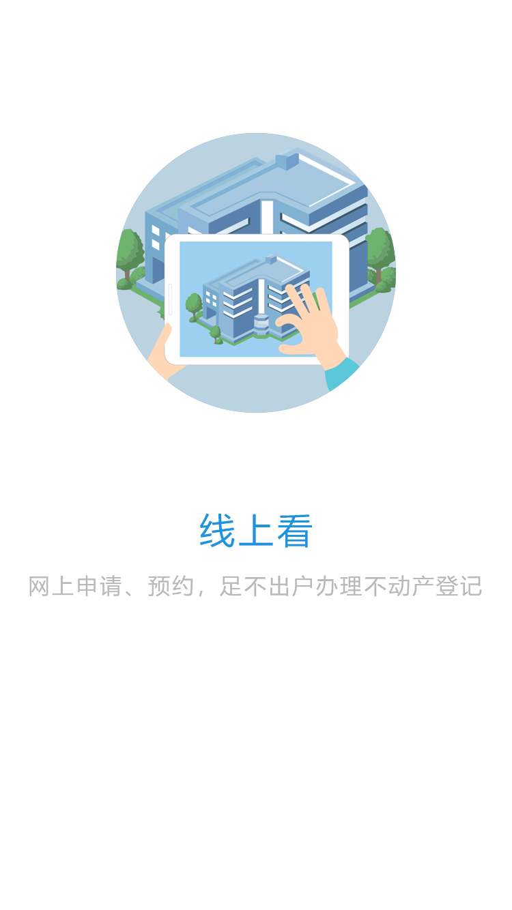
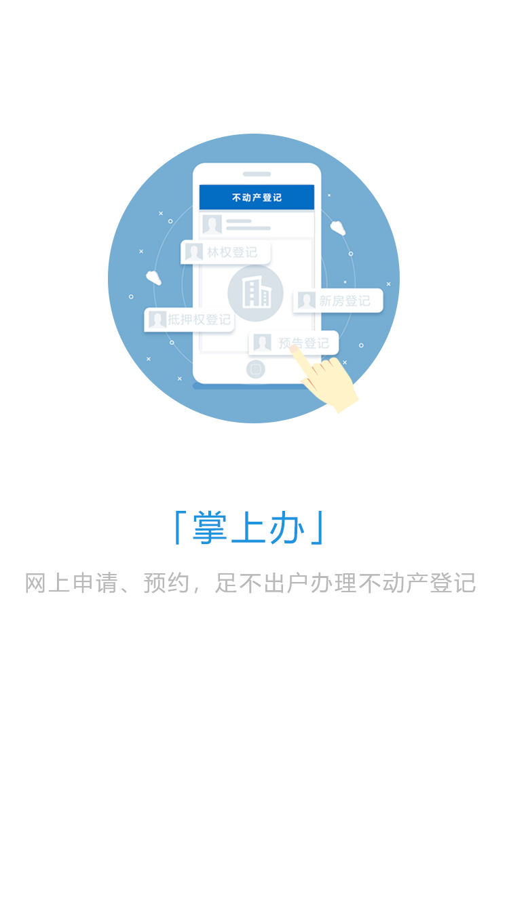
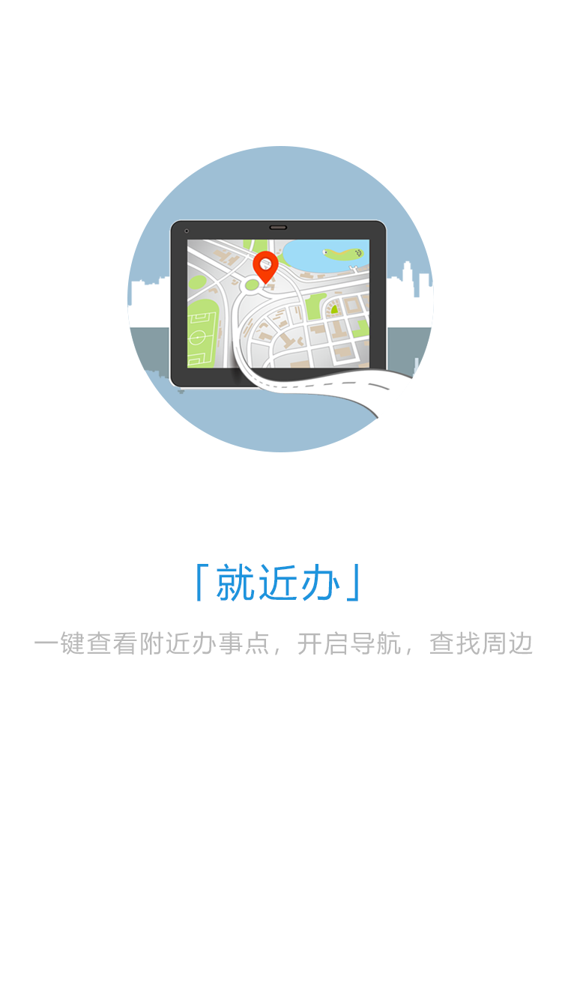
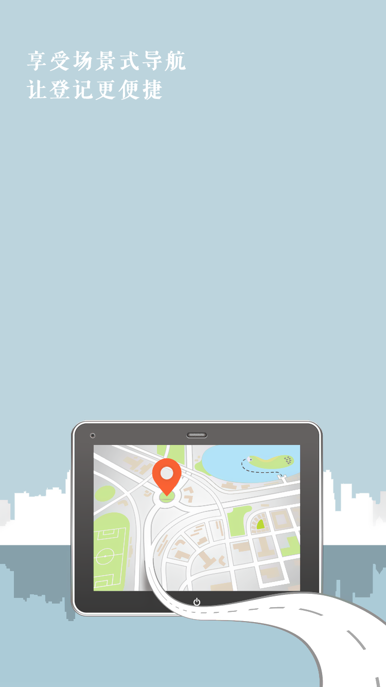

<ion-view hide-nav-bar="true">
	<ion-slide-box style="width: 100%; height: 100%;" ng-if="isShow">
		<ion-slide>
			
		</ion-slide>

		<ion-slide>
			
		</ion-slide>

		<ion-slide>
			<div style="position: relative;width: 100%;height: 100%;">
				
				<div style="position: absolute;display: flex;bottom: 68px;width: 100%;justify-content: center;">
					<button ng-click="begin()" class="button button-positive" style="width: 100px; ">开始体验</button>
				</div>
			</div>
		</ion-slide>
	</ion-slide-box>

	<div ng-if="!isShow">
		
		<video id="videoId" autoplay="true" src="../theme/video/splash_video.mp4" width="100%" height="29%" style="position: absolute; margin-top: 110px; object-fit: fill;"></video>
		<button type="button" ng-click="finishNow()" style="width: 60px; height: 30px; float: right; color: white; background-color: rgba(191,191,191,0.6); border: none; border-radius: 10px; margin: 20px; position: relative;">跳过</button>
	</div>
</ion-view>